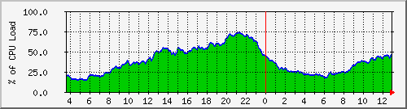
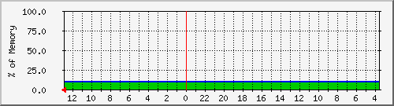
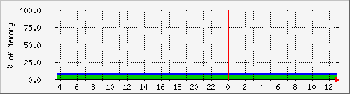
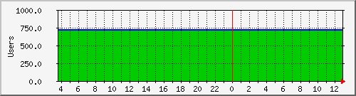

MRTG Index Page
CPU Utilization for Router

Memory (Processor) usage for Router

Memory (I/O) usage for Router

Users summary

version 2.17.3
Tobias Oetiker
<tobi@oetiker.ch>
and
Dave Rand
<dlr@bungi.com>